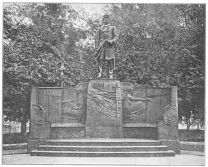
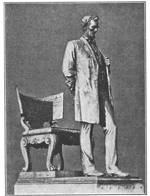
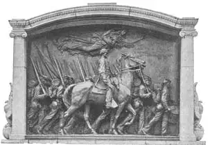

56
OUR BEST
美国最棒的雕刻家

NOW I’m going to tell you about Saint-Gaudens. Saint Gaudens wasn’t a Christian martyr, like Saint George; Saint Gaudens didn’t preach sermons to birds, as Saint Francis did: Saint-Gaudens wasn’t one of the Apostles, like Saint John. In fact, Saint-Gaudens wasn’t a saint at all. His last name was Saint-Gaudens just as it might have been Adams or Von Hindenburg. His first name was Augustus.
When I told you Saint-Gaudens wasn’t a saint, I didn’t mean you to think he was bad. Saint-Gaudens was a fine man, and a very fine sculptor. What a fine sculptor!
There is one way we know he was a truly great sculptor—his work is liked by so many different kinds of people. Young people (like you), grown-ups (like me), rich people and poor people, stupid people (not like you or me) and wise people (like you and me), all praise the statues that Augustus Saint-Gaudens made.

No.56-1 ADMIRAL FARRAGUT（《法拉格特海军上将》） SAINT-GAUDENS（圣高登 制）
Courtesy of The University Prints
Augustus Saint-Gaudens’s first great statue was of Admiral Farragut. Admiral Farragut was an officer in the United States Navy during our Civil War. The statue which stands in Madison Square, in New York City, shows the admiral as he must have looked standing on the deck of his ship. His feet are apart to brace him to the roll of the ship on the sea. His coat is blown back by the wind. His cap is pulled tight on his head on account of the stiff sea breeze. His face is strong and he looks determined, as if he had made up his mind to win no matter what happened.

No.56-2 ABRAHAM LINCOLN（亚伯拉罕·林肯》）
SAINT-GAUDENS（圣高登 制）
Courtesy of The University Prints
Now look at the base or pedestal on which the statue stands. Most pedestals are just big blocks of stone to hold the statue high. But Admiral Farragut’s pedestal is really part of the statue. An architect, a man who designs buildings, helped Saint-Gaudens design the pedestal. Look at the streaks that make you think of sea water. Notice the dolphins at the ends. Notice the naval sword that carries your eye up again to the admiral.
Notice one other thing: Admiral Farragut is in his uniform and the uniform has trousers. This is the first statue I’ve shown you that shows trousers. Sculptors made their bronze or marble men in knee breeches in George Washington’s time. When men began to wear long trousers, the sculptors had a hard time. Trousers in statues are apt to look like stovepipes or logs instead of like cloth leg coverings. Sculptors still think men’s clothes with trousers not very suitable for statues. But Saint-Gaudens didn’t let tree-trunk trousers spoil his statues. His statues are good even in trousers.
And here’s another statue in trousers to prove it.
Saint-Gauden’s Lincoln is one of the best-loved statues in America. It stands in Lincoln Park in the city of Chicago. A copy of it was given to Great Britain by the United States and was put up near Westminster Abbey in London. Lincoln stands before a chair of state, or a president’s chair. He looks as if he had just stood up to say something to the people before him. Lincoln’s face seems very serious. It is a face that has in it both strength and gentleness, as though Lincoln knew that millions of anxious people were depending on him to lead them and comfort them. Do you know what “dignity” and “simplicity” mean? Saint-Gaudens’s Abraham Lincoln has dignity. It has simplicity.
The Farragut and Lincoln statues are of leaders in the Civil War. So is the next statue in this book. Saint-Gaudens was much too young at the time to be in the Civil War himself. But after the war, people wanted statues of the war heroes and Saint-Gaudens was chosen to make some of them.

No.56-3 THE SHAW MEMORIAL（《肖纪念碑》） SAINT-GAUDENS（圣高登 制）
Courtesy of The University Prints
Our next statue is of a Civil War officer. Saint-Gaudens made a statue in memory of Colonel Shaw, who commanded the first negro regiment from Massachusetts. The statue stands in Boston, on the spot from which Colonel Shaw and his soldiers started out for the war.
The Shaw Memorial is in relief. It shows the young colonel mounted on a horse and riding beside the marching colored men of his regiment. Above in the sky flies the Angel of Death. Saint-Gaudens put the Angel of Death there because Colonel Shaw was killed in battle with many of his soldiers, a few months after marching out of Boston.
The sculptor worked on this relief for fourteen years. Again and again he made changes until he felt that every part of the statue was right. In fact, he was so careful to make it a good memorial that he spent more money on making it than he was paid for doing it. The marching soldiers, the slanting rifles, the spirited horse, the forward look of the rider, the drawn sword, give such swing and life to the whole statue that you can almost hear the tramp of the feet and the beat of the drums.
Do you still remember the equestrian statue that is called the best in all the world? And the equestrian statue called the next to best in all the world? Now we come to the equestrian statue that has been called next-to-the-next-to-the-best-in-all-the-world—the third best equestrian statue. The sculptor was Saint-Gaudens. The statue is of General Sherman. General Sherman was a Northern leader in the war between the North and the South. The statue shows General Sherman riding forward behind the Angel of Victory.
The Sherman statue is made of bronze, but it is painted with gold paint or gilt so that it isn’t the same color as other bronze statues. It stands in the Plaza in New York City and every one riding up town or down town on the top of a Fifth Avenue bus can see it close at hand. It was done by the man we call the best American sculptor of all.
【中文阅读】
接下来我要介绍圣高登。圣高登不像圣乔治那样是基督的殉道者；也不像圣方济各那样向鸟儿布道；也不像圣约翰那样是十二使徒之一。事实上，圣高登根本就不是什么圣人。他姓圣高登，就像亚当或兴登堡这些姓氏一样，他名叫奥古斯都。
我说圣高登并非圣人，并不是说他就是恶人。圣高登人很好，而且很善于雕刻。他是一位优秀的雕刻家啊！
圣高登在各类人群中深受多人的喜爱，正是这一点使我们知道他真的是一位了不起的雕刻家。年轻人（像你）、成年人（像我）、富人、穷人、愚蠢的人（既不是你也不是我）、聪明的人（像你和我），大家都称赞圣高登的雕像作品。
圣高登的第一座著名的雕像刻画了法拉格特海军上将。法格拉特海军上将是南北战争期间的一位海军军官。这座雕像立在纽约市的麦迪逊广场，雕像上的海军上将就像站在船的甲板上一样。他双脚分开站着，因为这样才能在波涛汹涌的海面上站得稳。外套被海风吹起，而帽子也被强劲的海风紧紧地压在头上。法拉格特神情坚定，好像早已下定决心战胜未来发生的一切事情。
现在请看看这座雕像底下的基座吧。大多数的雕像基座只是简简单单的一个大石块。但是，《法拉格特海军上将》这座雕像的基座已经与雕像本身融为一体了。它是一个建筑家帮助圣高登设计的。基座上的条痕会让你想起波涛汹涌的海水。再看看基 座两端的海豚。相信法拉格特佩戴的海军军刀也会吸引你的眼球。
另外还要注意一件事：法拉格特海军上将穿的是制服，而制服是与裤子配套的。这是目前为止我所介绍的第一座穿裤子的雕像。华盛顿时代，青铜雕像或大理石雕像上的人物底部一般到膝盖为止。在人们开始穿长裤后，雕刻家们可就为难了。雕像上的裤子看起来并不像裤筒，而像火炉烟囱或圆木。雕刻家们仍然认为人穿裤子是不适合雕刻的。但是，圣高登并没有让树干一样的裤子毁了他的雕像。他雕刻的即使是穿着裤子的雕像也很棒。
他的另一座穿着裤子的雕像也能证明这一点。
圣高登的《林肯》是美国最受喜爱的雕像之一。这座雕像竖立在芝加哥城的林肯公园。美国将这座雕像的一个摹制品送给了英国，英国将雕像竖在伦敦威斯敏斯特教堂附近。雕像上，林肯站在总统椅子前，好像是刚起身要同站在他面前的人们说话。林肯看起来非常严肃。他的脸上充满力量和柔情，仿佛知道深受焦虑的千百万民众正在依靠他的领导和安慰。知道“威严”和“朴实”的含意吗？圣高登刻画的亚伯拉罕·林肯使人感到既“威严”又“朴实”。
上面两座雕像刻画的都是内战期间的领导者。接下来要介绍的这座雕像也是如此。内战时期，圣高登年纪还小。但是战后，人们急切地想为战场上的英雄刻像，于是他们选择了圣高登来制作。
接下来的这座雕像刻画的也是一位战时的军官。圣高登为上校肖制作了一座纪念雕像。肖曾领导首个来自马萨诸塞州的黑人军团。现在，这座雕像竖在波士顿，那正是上校肖带领士兵奔赴战场时的出发地。
《肖纪念碑》是一座浅浮雕。它向我们展示了这位上校骑在马背上，与他的黑人军团并肩前进的场景。死亡天使飞在他们头顶上方。圣高登之所以将死亡天使刻在上方，是因为在他们离开波士顿后几个月，上校和他的许多战士便战死沙场。
雕刻家花了十四年时间来完成这座浅浮雕。他反反复复地对雕像做修改，直到认为满意为止。事实上，他是如此细致入微地想要打造一座完美的纪念碑，以至于最后他所花费的钱超过了他所得到的钱。前进的士兵、斜扛的步枪，还有骏马和上校勇往直前的目光以及出鞘的佩剑等，这一切都给整个雕像增添了韵律与生机，使人仿佛都能听到队伍的脚步声及战鼓的雷鸣声。
还记得那号称世界最好和次好的骑马像吗？现在，我们来说说位居世界第三的骑马像吧。它的制作者正是圣高登。雕像刻画的是谢尔曼将军。他是南北战争时期北方的领导者。雕像向我们展示了谢尔曼将军在胜利天使的带领下策马奔腾的情景。
谢尔曼雕像是用青铜铸造的，但是雕像上涂了金色的颜料或者是镀了金，所以这座雕像的颜色不同于其他的青铜雕像。如今，这座雕像竖立在纽约市的购物广场。第五大道来回公交车顶部的乘客都能近在咫尺地看见它。它是由美国最棒的雕刻家雕刻而成的哦。